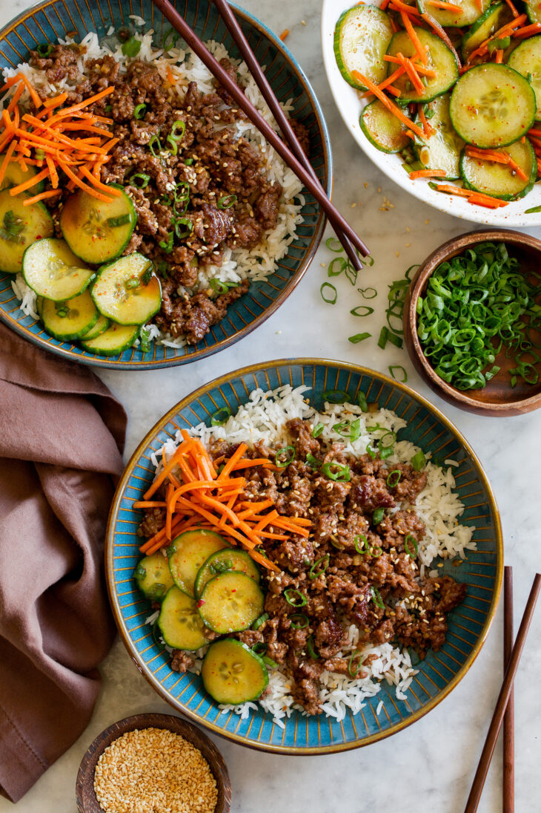

Korean Beef Bowl

Description
487 calories, 28 grams of protein
Meal prep time: 30 mins, for 4 servings
Super fast and delicious simplified meal. A great dinner choice with high protein!
Credits to Cooking Classy
Ingredients
- 1 1/2 tablespoon honey*
- 1 1/2 tablespoon dark brown/white sugar
- 1 tablespoon sesame oil
- 2 teaspoon lime juice
- 3 tablespoon soy sauce
- 2 tablespoon water
- 2 teaspoon vegetable oil
- 18 oz 85% lean ground beef
- 1/3 cup chopped green onions (white portion)
- 1 tablespoon peeled and minced fresh ginger
- 1 tablespoon minced fresh garlic
- 1/2 teaspoon cornstarch mixed with 2 teaspoon water (optional)
- chopped green onions (green portion) for garnish
- 2 cups cooked white or brown rice
Steps
Enjoy!